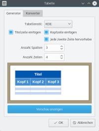

InyokaEdit
Dieser Artikel wurde für die folgenden Ubuntu-Versionen getestet:
Ubuntu 16.04 Xenial Xerus
Ubuntu 14.04 Trusty Tahr
Zum Verständnis dieses Artikels sind folgende Seiten hilfreich:
InyokaEdit  ist ein speziell auf Inyoka ausgerichteter Editor. In erster Linie ist er dafür gedacht, Artikel für auf Inyoka aufbauende Portale auf dem eigenen Rechner zu erstellen. Es wird keine Internetverbindung zum Schreiben benötigt, da InyokaEdit über eine integrierte Vorschaufunktion verfügt. InyokaEdit wurde mit Qt erstellt und integriert sich somit in jede Desktopumgebung und ist plattformübergreifend verfügbar.
Neben Ubuntu wird zusätzlich eine Version für Windows angeboten (Downloadseite
ist ein speziell auf Inyoka ausgerichteter Editor. In erster Linie ist er dafür gedacht, Artikel für auf Inyoka aufbauende Portale auf dem eigenen Rechner zu erstellen. Es wird keine Internetverbindung zum Schreiben benötigt, da InyokaEdit über eine integrierte Vorschaufunktion verfügt. InyokaEdit wurde mit Qt erstellt und integriert sich somit in jede Desktopumgebung und ist plattformübergreifend verfügbar.
Neben Ubuntu wird zusätzlich eine Version für Windows angeboten (Downloadseite  ).
).
| InyokaEdit | ||
| Projektseite
| ||
| Sprache: |  | |
| Autor: | Shakesbier | |
| Erste Veröffentlichung: | 2012 | |
| Lizenz: | GNU GPL v3 | |
| Oberfläche: | Qt | |
| Programmiersprache: | C++ | |
| Installation: | PPA | |
Weitere Funktionen:
Herunterladen des Rohtextes eines Inyokaartikels inklusive Bilder
Hochladen eines Artikels in die Wiki-Baustelle
Integrierte offline Vorschaufunktion
Paralleles Bearbeiten mehrerer Artikel (Registerkarten)
Codevervollständigung für Vorlagen
Alle Inyoka-Textbausteine und InterWiki-Links über das Menü auswählbar
Artikel zusammen mit Bildern in einer Datei speichern.
Rudimentäre Syntaxprüfung (offene Klammern, bekannte Vorlagen)
Erweiterungen:
Syntax-Hervorhebung der Inyoka-Elemente
Rechtschreibprüfung (basierend auf Hunspell)
Wissensblock-Auswahldialog
Tabellengenerator/-konverter
Tastenkombinationen für eigene Textelemente
Installation¶
InyokaEdit ist kein Bestandteil der offiziellen Paketquellen. Zur Installation muss das "Pesonal Packages Archiv" (PPA) [1] des Entwicklers freigeschaltet werden.
PPA¶
Adresszeile zum Hinzufügen des PPAs:
ppa:elthoro/inyokaedit
Hinweis!
Zusätzliche Fremdquellen können das System gefährden.
Ein PPA unterstützt nicht zwangsläufig alle Ubuntu-Versionen. Weitere Informationen sind der  PPA-Beschreibung des Eigentümers/Teams elthoro zu entnehmen.
PPA-Beschreibung des Eigentümers/Teams elthoro zu entnehmen.
Damit Pakete aus dem PPA genutzt werden können, müssen die Paketquellen neu eingelesen werden.
Nach dem Aktualisieren der Paketquellen können InyokaEdit und optional die Erweiterungen über die folgenden Pakete installiert [2] werden:
inyokaedit (ppa)
inyokaedit-data-ubuntuusersde (ppa, uu.de spezifische Dateien, die zur Erstellung der Vorschau benötigt werden)
inyokaedit-plugins (ppa, optional und enthält Rechtschreibprüfung, Syntax-Hervorhebung, Wissensbox-Auswahldialog, Tabellengenerator und Tastenkombinationen)
 mit apturl
mit apturl
Paketliste zum Kopieren:
sudo apt-get install inyokaedit inyokaedit-data-ubuntuusersde inyokaedit-plugins
sudo aptitude install inyokaedit inyokaedit-data-ubuntuusersde inyokaedit-plugins
Sofern in der Vorschau die Syntax-Hervorhebung im Codeblock angezeigt werden soll, wird zusätzlich das nachfolgende Paket benötigt. Hinweis: Dies betrifft nicht die Syntax-Hervorhebung im Editor. Für diese wird kein extra Paket benötigt.
python-pygments
mit apturl
Paketliste zum Kopieren:
sudo apt-get install python-pygments
sudo aptitude install python-pygments
Bedienung¶
Nach der Installation kann InyokaEdit über "Zubehör → InyokaEdit" (Ubuntu), bzw. "Dienstprogramme → InyokaEdit" (Kubuntu) gestartet werden.
Über das Menü "Datei → Neu von Template" können Artikelvorlagen geladen werden. Zusätzlich können eigene Vorlagen erstellt werden. Nachdem diese im Verzeichnis ~/.local/share/inyokaedit/community/ubuntuusers_de/templates/articles/ mit der Dateiendung .tpl abgelegt wurden, erscheinen diese ebenfalls im Vorlagenmenü. Die Symbolleiste des Editors entspricht exakt der Symbolleiste, welche bei der Online-Bearbeitung eines Artikels innerhalb von Inyoka angezeigt wird. Des Weiteren stehen über das Menü alle in Inyoka verfügbaren Textbausteine und InterWiki-Links zur Verfügung.
Durch  auf kann der Rohtext eines beliebigen Wikiartikels heruntergeladen werden. Hierzu muss man den Namen des gewünschten Artikels in das erscheinende Eingabefenster eingeben. Zum Herunterladen alter Artikelrevisionen muss die Zeichenkette
auf kann der Rohtext eines beliebigen Wikiartikels heruntergeladen werden. Hierzu muss man den Namen des gewünschten Artikels in das erscheinende Eingabefenster eingeben. Zum Herunterladen alter Artikelrevisionen muss die Zeichenkette @rev=1234 (1234 durch die jeweilige Revisionsnummer des Artikels ersetzen) angehängt werden. Über den Knopf  kann der aktuell geöffnete Artikel in die Baustelle hochgeladen werden.
kann der aktuell geöffnete Artikel in die Baustelle hochgeladen werden.
Sollen die verwendeten Bilder zusammen mit dem Artikel in einer Datei gespeichert werden, so muss beim Speichern die Dateierweiterung .inyzip ausgewählt werden.
Über "Hilfe → Syntax-Übersicht" öffnet sich ein Fenster mit einer Übersicht über alle zur Verfügung stehenden Syntaxelemente inklusive einer kurzen Beschreibung.
Vorschau¶
Durch auf das Symbol oder beim Wechsel eines Reiters wird die Vorschau des Artikels generiert und angezeigt. Befindet man sich in der Vorschau, kann man durch  ein Popup-Menü öffnen, über das man die Seite neu laden oder vor und zurück navigieren kann, falls man auf einen Link geklickt hat.
ein Popup-Menü öffnen, über das man die Seite neu laden oder vor und zurück navigieren kann, falls man auf einen Link geklickt hat.
Über die "Einstellungen" kann der Editor vertikal oder horizontal geteilte werden. Damit wird die Vorschau direkt neben oder unter dem Rohtext des Artikels angezeigt. Zusätzlich kann festgelegt werden, beim Druck auf welche Taste (z.B. immer sobald ⏎ gedrückt wird) die Vorschau automatisch aktualisiert werden soll. Alternativ kann eine Zeitspanne angegeben werden, nach der die Vorschau automatisch neu erstellt wird.
Sollen eigene Bilder in der Vorschau genutzt werden, müssen diese im Verzeichnis des Artikels abgelegt werden.
|  |
| Tabelle erstellen |
Erweiterungen¶
Sofern das Paket inyokaedit-plugins installiert ist, stehen Syntax-Hervorhebung, Rechtschreibprüfung, Wissensblock-Auswahl, Tabellengenerator/-konverter und Tastenkombinationen als Erweiterungen zur Verfügung. Über "Bearbeiten → Einstellungen → Erweiterungen" können diese separat de-/aktiviert werden, sowie weitere Konfigurationen vorgenommen werden.
Für die Syntax-Hervorhebung können eigene Farbstile definiert werden. Sowohl die Wissensblock-Auswahl, als auch die Tastenkombinationen für eigene Textelemente können beliebig erweitert oder gekürzt werden. Über den Tabellengenerator/-konverter können Tabellen in frei wählbarer Größe inklusive Farbformatierungen erstellt werden. Des Weiteren können Tabellen von der Inyoka Basisformatierung in die "neue" Tabellenformatierung und umgekehrt umgewandelt werden.
Der Aufruf einer Erweiterung geschieht über das Menü "Extras", bzw. zusätzlich bei manchen Erweiterungen über das entsprechende Symbol in der Werkzeugleiste.
Einstellungen¶
Über "Bearbeiten → Einstellungen" kann ein grafischer Einstellungsdialog aufgerufen werden.
Sofern man das automatische Speichern des Dokuments nach einer gewissen Zeit aktiviert hat, wird eine Sicherungskopie unter ~/.local/share/inyokaedit/AutoSave.bak~ abgelegt, bzw. falls eine existierende .iny-Datei geöffnet wurde, wird eine .bak~-Datei im selben Ordner wie der geöffnete Artikel angelegt.
Getestet-Vorlage erweitern¶
Da nicht direkt mit jeder Ubuntu-Version eine aktualisierte Version von InyokaEdit zur Verfügung stehen kann, hat man die Möglichkeit, die Textbausteine Getestet und UT über eine Konfigurationsdatei selbst um neue Ubuntu-Versionen zu erweitern. Hierzu muss eine Textdatei TestedWith.conf bzw. TestedWithTouch.conf im Verzeichnis ~/.local/share/inyokaedit/community/ubuntuusers_de/templates/ erstellen. Pro Ubuntu-Version ist eine neue Zeile mit folgender Formatierung einzufügen. Beispiel für Ubuntu 17.04:
zesty = [:Zesty_Zapus:Ubuntu 17.04] Zesty Zapus
Eigene Menü-/Werkzeugleisten¶
Seit InyokaEdit 0.19.0 können eigene Menüeinträge und Werkzeugleisten zum Editor hinzugefügt werden. Hierzu muss eine XML-Datei in ~/.local/share/inyokaedit/community/ubuntuusers_de/ erstellt werden. Für einen neuen Menüeintrag muss die Datei menu_1_de.xml, für eine Werkzeugleiste toolbar_1_de.xml und für eine Dropdown-Menü dropdown_1_de.xml benannt werden. Bei mehr als einer Datei muss "_1" jeweils inkrementiert werden. Sofern nicht Deutsch als Sprache der Benutzeroberfläche verwendet wird, muss "_de" durch das entsprechende Sprachkürzel ersetzt werden.
Als Vorlage können die bei der Installation mitgelieferten XML-Dateien in /usr/share/inyokaedit/community/ubuntuusers_de/ verwendet werden.
Fehler melden¶
Gefundene Fehler sollten, sofern ein GitHub-Nutzerkonto vorhanden ist, über den zum Projekt gehörenden Bugtracker gemeldet werden. Dies ist über den Menüpunkt "Hilfe → Fehler melden" auch direkt aus dem Editor möglich.
Ist kein GitHub-Nutzerkonto vorhanden, können Fehler über den Thread zu InyokaEdit im Forum gemeldet werden.
Links¶
InyokaEdit – Projektseite
Thread zu InyokaEdit – Diskussion zum Editor, zur Mitarbeit und Verbesserungsvorschläge
Projektvorstellung: InyokaEdit – ein Editor für Inyoka - Ikhaya, 02/2012

- Erstellt mit Inyoka
-
 2004 – 2017 ubuntuusers.de • Einige Rechte vorbehalten
2004 – 2017 ubuntuusers.de • Einige Rechte vorbehalten
Lizenz • Kontakt • Datenschutz • Impressum • Serverstatus -
Serverhousing gespendet von